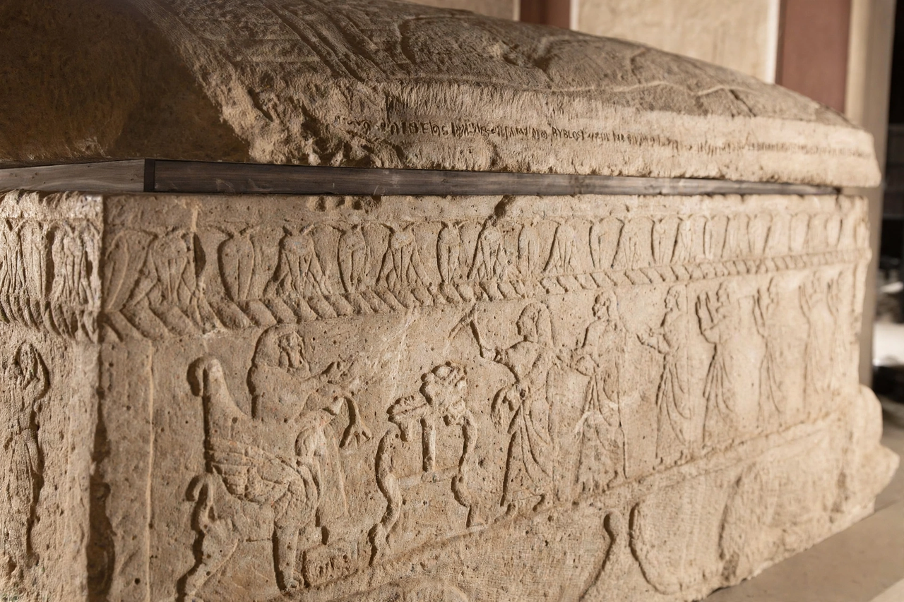

| Phoenician alphabet | |
|---|---|
 | |
| Type | Abjad (consonantal alphabet) |
| Period | c. 1200 BCE – 150 BCE |
| Direction | Right-to-left |
| Letters | 22 |
| Descendants | Greek, Aramaic, Hebrew, Punic, Paleo-Hebrew |
The Phoenician alphabet is a consonantal alphabet (an abjad) developed by the Phoenicians of the Levant by about 1200 BCE and used until roughly 150 BCE. With just 22 letters, all consonants, written right-to-left, it became the most widely diffused writing system of the ancient world: directly or indirectly, it is the ancestor of nearly every alphabet in use today, including the Greek, Hebrew, Arabic and — through Greek and Etruscan — the Latin alphabet.
Phoenician streamlined the earlier Proto-Canaanite scripts, themselves simplified from Egyptian hieroglyphic signs by the acrophonic principle — a sign took the sound-value of the first consonant of the object it pictured. Thus the sign for an ox (ʾalp) meant /ʔ/, becoming Greek alpha and ultimately the letter A. The earliest substantial Phoenician text is the inscription on the sarcophagus of Ahiram of Byblos (c. 1000 BCE).
Carried by Phoenician merchants and colonists across the Mediterranean, the script passed to the Greeks — Greek legend remembered Cadmus of Tyre as its bringer — who added vowels and created the true alphabet. Eastward, its Aramaic form spread through the Persian Empire and gave rise to the Hebrew, Arabic, Syriac and (through Kharoshthi and Brahmi, on one widely held view) the Indic scripts. The Punic form used at Carthage survived in North Africa into late antiquity.
The letters' names and order were remarkably stable: aleph, bet, gimel, dalet … survive, slightly altered, as alpha, beta, gamma, delta in Greek, and the letter-order is still echoed in the modern keyboard-independent sequences used in Semitic scripts. Paleo-Hebrew, Samaritan and Greek scripts all descend from the Phoenician stock in recognisable form.